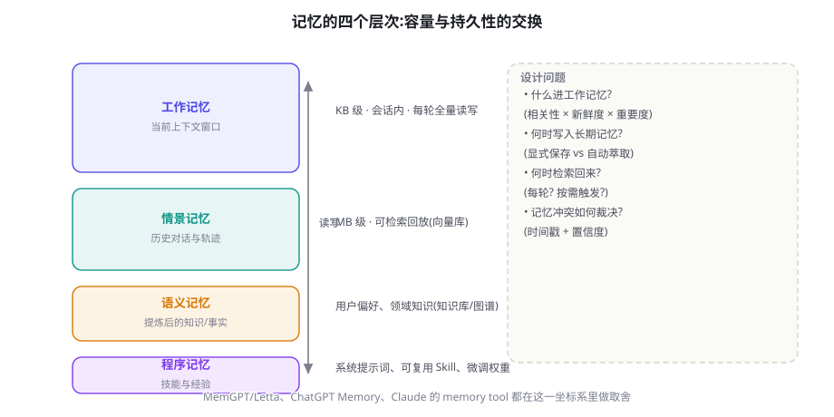
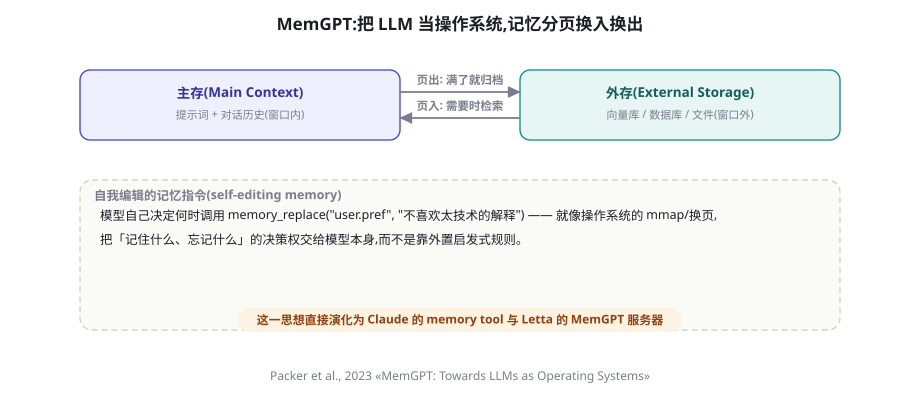

记忆系统：短期、长期、情景与语义
「上次说过的怎么又忘了？」——用户对 Agent 最常见的不满几乎都关于记忆。本章建立记忆系统的完整坐标系：四种记忆类型、读写检索遗忘的完整生命周期、MemGPT 开创的「记忆分页」架构，以及 Mem0/Zep/Letta 等主流方案的选型对比。
先分清：上下文、记忆与检索
这三个词经常混用，工程上必须分开。上下文（Context）是模型的输入窗口——它每次调用都从零开始，窗口里没有的就是不存在。记忆（Memory）是让「窗口之外的信息在需要时可用」的机制总称——它必须回答存什么、存在哪、何时取。检索（Retrieval）是实现记忆的技术手段之一（第 20 章的 RAG 是它面向文档的特例）。一句话锁定关系：记忆 = 让上下文在正确时刻包含正确信息的系统工程。
这个定义直接暗示了一个反直觉的判断：记忆系统的核心难点不是「存」（任何数据库都能存），而是「取的时机」与「取多少」——因为上下文是稀缺资源（第 23 章的预算观），把所有记忆每轮全部塞进去等于没有记忆。记忆工程的全部艺术在于「什么信息，在什么时刻，以什么形态，占多少预算」这四个决策。

四种记忆：借自认知科学的工程分类
四分法借自认知心理学，但每一条都有精确的工程对应：
| 类型 | 认知科学含义 | Agent 工程对应 | 典型存储 | 失效表现 |
|---|---|---|---|---|
| 工作记忆 | 当前意识中的内容 | 上下文窗口内的全部内容 | 消息列表 | 窗口溢出即失忆；「中段遗忘」 |
| 情景记忆 | 亲历事件的自传体记录 | 历史会话、完整任务轨迹 | 向量库/时序库 | 「上次我们是怎么解决的来着？」 |
| 语义记忆 | 脱离情境的事实与概念 | 用户画像、偏好、领域事实（「客户X 用 PostgreSQL」） | KV 库/图谱/画像表 | 每次都要重新自我介绍 |
| 程序记忆 | 技能与操作规程 | 系统提示词、可复用 Skill、微调权重（第 39 章） | 提示词库/权重 | 同样的错每次都犯 |
分类的价值在于处方明确：用户抱怨「不记得偏好」→ 语义记忆缺写入；「同样的错反复犯」→ 程序记忆没沉淀；「上下文一长就乱」→ 工作记忆需要压缩（第 23 章）；「以前任务的经验用不上」→ 情景记忆缺检索回放。
记忆的生命周期：写入、检索、冲突、遗忘
把记忆当数据工程做，生命周期四阶段各有设计题：
写入（What & When to write）。两条路线：显式写入——用户说「记住我偏好简体中文回复」或模型调用 memory_save 工具；自动萃取——会话结束后由一个萃取器（可以是另一个 LLM 调用）扫描对话，提炼值得长期保存的事实。显式可控但依赖用户自觉；自动覆盖广但噪音与隐私风险高。生产系统的健康组合：自动萃取打草稿 + 用户可见可删（这是 ChatGPT Memory 的产品化选择，也是合规底线）。
检索（When to recall）。三种触发时机：每轮固定注入（贵但稳定，适合小体量核心画像）、按语义相似度触发（查询与记忆向量匹配超过阈值时注入）、按需工具化（把记忆做成 recall(query) 工具让模型自己决定何时查——MemGPT 路线）。第三种最灵活，但把「该不该想起来」的判断交给了模型，漏取率上升；混合策略（核心画像固定注入 + 其余工具化）是当前的主流折中。
冲突（Conflict resolution）。用户三月说「我对花生过敏」，九月说「我现在能吃花生了」。记忆系统必须有裁决规则：常见做法是时间戳新者胜 + 显式覆盖标记，并把「更新事实」与「追加事实」区分为不同操作（更新需要先检索旧值）。图谱型记忆（如 Zep 的时序知识图谱）在冲突处理上最严谨——每条事实带有效期区间，查询时按时间过滤。
遗忘（Forgetting）。遗忘不是缺陷而是功能：过时信息不遗忘就会持续污染判断（「用户六个月前抱怨过 A 功能」可能早已失效）。机制上三招：TTL（条目过期）、衰减评分（长期未被检索命中的记忆降权）、合并压缩（同类细碎记忆合并为摘要条目）。外加合规维度的硬遗忘（用户删除权，第 65 章）。
MemGPT：把记忆问题变成操作系统问题
把上下文窗口类比为「主存」、外部存储类比为「磁盘」，让 LLM 自己通过函数调用在两者之间移动信息（分页），从而在有限窗口内维持「无限」的对话与任务。其开源实现演化为准入门槛最低的记忆框架 Letta。
MemGPT 的洞察是架构级的：与其造一个更聪明的「外部记忆管理器」，不如把管理权交给模型自己。模型通过四个自编辑指令操作记忆：core_memory_append/replace（改写常驻上下文的核心记忆）、archival_memory_insert/search（读写外部档案）。相当于操作系统向进程暴露的系统调用——什么时候换页、换出什么，由「进程」（模型）根据自身需要决定。

这个设计有两个深远影响。其一，它重新定义了「上下文管理」的分工：确定性高的操作（满了就摘要最旧的历史）由系统自动执行，语义敏感的操作（「这个用户偏好值得常驻」）由模型决策——两边各干擅长的事。其二，它直接催生了「记忆即工具」的模式：Claude 的 memory tool（2025）、各框架的 memory 组件，本质上都是给模型一组「记忆系统调用」。当你设计自己的记忆 API 时，MemGPT 的四指令集仍是最好的起点。
import json
from openai import OpenAI
client = OpenAI()
class SimpleMemory:
"""核心区(常驻上下文) + 档案区(向量检索)"""
def __init__(self):
self.core = {"persona": "客服小艾,亲切但专业",
"user": "用户: 张先生, 企业客户, 偏好简洁回复"}
self.archive = [] # 生产中换向量库
def save(self, key: str, value: str, core: bool = False):
if core:
self.core[key] = value # 常驻,每轮可见
else:
self.archive.append({"text": value}) # 落库,检索时可见
def recall(self, query: str, k: int = 3) -> str:
# 生产中用 embedding 相似度;演示用子串匹配
hits = [m["text"] for m in self.archive
if any(w in m["text"] for w in query.split())][:k]
return "\n".join(hits) if hits else "没有相关记忆"
MEMORY_TOOLS = [
{"type": "function", "function": {"name": "memory_save",
"description": "保存值得长期记住的信息。core=true 会常驻每轮上下文,"
"只放高频必需信息(如用户核心偏好)",
"parameters": {"type": "object", "properties": {
"key": {"type": "string"},
"value": {"type": "string"},
"core": {"type": "boolean", "description": "是否常驻"}}}}},
{"type": "function", "function": {"name": "memory_recall",
"description": "回忆过去保存的信息,不确定时先查一下",
"parameters": {"type": "object", "properties": {
"query": {"type": "string"}}}}},
]
def chat(user_msg: str, mem: SimpleMemory) -> str:
sys_prompt = "你是客服助手。\n[核心记忆]\n" + json.dumps(
mem.core, ensure_ascii=False) # 核心区每轮注入
messages = [{"role": "system", "content": sys_prompt},
{"role": "user", "content": user_msg}]
for _ in range(4): # 记忆操作也给步数上限
r = client.chat.completions.create(
model="gpt-4o-mini", messages=messages,
tools=MEMORY_TOOLS).choices[0].message
if not r.tool_calls:
return r.content
messages.append(r)
for tc in r.tool_calls:
args = json.loads(tc.function.arguments)
if tc.function.name == "memory_save":
mem.save(**args)
out = "已保存"
else:
out = mem.recall(args["query"])
messages.append({"role": "tool", "tool_call_id": tc.id,
"content": out})
return "记忆操作过于频繁,请直接回答"Agentic Memory：把「记住」变成一种能力而非功能
2025 年之后的一个重要范式转向：记忆不再是一个外挂模块，而是 Agent 能力的一部分。这个转向有三个标志。其一，模型开始被训练「知道自己不知道」——当被问到超出上下文的信息时，先查记忆再回答（而不是编造），这种「记忆检索习惯」可以通过 SFT/RL 训练（第 44-45 章）。其二，记忆操作与任务操作统一在同一工具循环里——保存、检索、更新与「搜索网页」是平级的动作，模型按需编排。其三，记忆的组织结构开始影响任务结构：长任务 Agent 会主动把中间结论写入记忆文件作为「外部工作台」（第 76 章），记忆与规划在此合流。
对实践者的含义：设计记忆系统时，不要只设计「存储」要多设计「习惯」——系统提示词里明确「何时应当保存、何时应当先回忆、什么信息值得常驻」，配上相应的工具与几条 few-shot，检索习惯的养成速度远超预期。反过来，一个设计精良但从不被模型主动使用的记忆库，问题多半出在「习惯没教」。
方案横评：Mem0、Zep、Letta 与自研
2024-2025 年记忆层涌现了一批专门方案，选型时按「你的记忆语义复杂度」分流即可：
| 方案 | 核心思路 | 强项 | 代价与局限 | 适合 |
|---|---|---|---|---|
| Mem0 | 会话后自动萃取事实条目，双存储（向量+图可选） | 接入简单（pip 即用）、抽取质量调优充分 | 萃取是黑盒策略；深度定制要读源码 | 快速给聊天产品加上「记得用户」 |
| Zep | 时序知识图谱（Graphiti）：实体关系 + 有效期 | 事实冲突裁决严谨，支持「何时为真」查询 | 图谱构建与维护成本高 | 事实密集、强时效性的企业场景 |
| Letta (MemGPT) | 自编辑分页记忆的框架化 | 模型自治记忆的完整实现，可观测性好 | 心智模型较重，调优需要理解其分区 | 长程任务型 Agent、研究复现 |
| Claude memory tool | 把记忆文件读写做成原生工具 | 零基础设施、跨会话可续 | 绑定特定模型；文件型组织需自律 | 已在 Claude 生态内的产品 |
| 自研双区制 | 本章代码模式：核心区+档案区 | 完全可控、无依赖 | 萃取/检索/冲突全要自己做 | 有平台团队、记忆逻辑是核心资产 |
提示词侧的配合：注入格式决定记忆价值
同一个记忆条目，注入格式不同，被模型正确使用的概率差异巨大。三条实测有效的格式经验：一是加「记忆头」——注入块用明确标记包裹（如 [长期记忆·可信度高]），让模型能区分「用户刚说的」与「系统记的」，后者允许更简洁的回应方式；二是带时间戳——「（2026-06 记录）」让模型对可能过时的信息保持谨慎；三是结构与自然语言并存——画像类用结构化键值（便于冲突更新），事件类用自然语言句（便于语义检索与引用）。最后一条反向提醒：不要把记忆包装成「系统指令」的口吻——「用户喜欢简洁」写成「你必须保持简洁」会让记忆与实时指令的优先级混乱，也剥夺了模型在特殊场景（用户明确要详细版）的灵活度。
冷启动与迁移：记忆系统的两个现实工程题
上线记忆功能时有两个问题几乎必然遇到。冷启动：新用户零记忆，系统该表现成什么样？答案不是「什么都不做」，而是设计「记忆获取的体验路径」——前几次交互主动询问关键偏好（「希望简洁还是详细？」），把获取过程本身做成产品体验而非表单。要警惕的是用「默认画像」填充：一个猜测性的画像错了比空着危害大，因为它带置信度伪装。迁移：换记忆方案（比如从自研迁到 Mem0）时，记忆条目的 schema 映射、置信度重估、以及「迁移后一个月的召回率对比」都要有预案——记忆是用户资产，迁移丢记忆等于产品级事故。迁移演练要在预发环境跑全量用例（上节四指标）再切流量。
四种架构模式：记忆怎么长在系统里
把视角从条目拉高到系统，记忆的接入位置有四种模式，各有明确的适用信号：
- 模式 A · 内联注入（Inline）：应用层在组装上下文时查库拼接。实现最简单、无模型配合要求；缺点是「取什么」完全由代码的启发式决定，模型没有主动权。适合画像类小体量记忆。
- 模式 B · 工具化（Tool-accessed）：记忆以 save/recall 工具暴露（本章代码即此）。模型有主动权，行为可解释；代价是多一轮交互、漏取依赖模型自觉。适合任务型 Agent。
- 模式 C · 会话间萃取管道（Pipeline）：会话结束时离线萃取入库，会话开始时注入画像。Mem0 的典型用法。把成本移出实时链路，适合「跨会话的用户记忆」。
- 模式 D · 分页运行时（Paged runtime）：MemGPT/Letta 式，记忆管理内建于运行时，模型与系统协同换页。工程最重，能力上限也最高，适合长时程任务平台。
四种模式不互斥——成熟系统往往是「C 管跨会话、B 管会话内、A 管核心画像」的组合。选型的判断题只有一个：「取什么」这个决策，你愿意交给代码启发式、模型自觉，还是离线管道？愿意交给谁，就选以谁为中心的模式。
两种视角的记忆：服务用户与服务任务
工程上值得把记忆按「服务对象」再切一刀。面向用户的记忆（偏好、画像、历史）追求「被想起」的惊喜感，产品价值直接；面向任务的记忆（中间结论、已尝试路径、环境状态）追求「不重复劳动、不重复犯错」，是效率与正确性的基石。两者的设计取向差异显著：前者要精心控制「什么值得说出口」（记住用户离婚不该主动提起），后者可以完全机械（缓存上次失败的命令）。混在一起设计是常见的混乱源——推荐在存储层就分为 user_memory 与 task_memory 两个命名空间，注入策略分开管理。
任务记忆的一个精简形态值得单独一提：失败缓存（negative memory）——「这个方法试过、失败了、原因是什么」。把它做成结构化条目（尝试、结果、归因），并在模型重复相似动作前注入提醒，可以直接打击 ReAct 最大的顽疾「原地打转」（第 16 章失败模式清单的第二条）。它便宜、无隐私风险，是任务记忆里投产比最高的一块。
给记忆条目建模时，给每条记忆附加三个属性会让整个系统突然变得可优化：置信度（萃取自一次随口提及 vs 用户反复强调）、新鲜度（时间衰减函数）、引用价值（被召回后实际影响了多少次回答）。三者相乘得到「记忆的边际价值」，低于阈值的条目进入合并或清除队列。这套机制把「遗忘」从定时任务变成价值驱动的资产管理——你的记忆库不再无限膨胀，而是维持在一个「每条都有存在理由」的稳态。工程实现上，一个每晚跑的价值重估脚本 + 一条清理队列就够了。
与 RAG 的边界：什么时候不是记忆问题
实践中大量「记忆需求」其实是 RAG 需求（第 20 章），划清边界能省掉昂贵的错误建设。判据一句话：信息的主体是「关于这个用户/这段任务的事实」→ 记忆；主体是「关于世界或语料的知识」→ RAG。「张先生的企业套餐 8 月到期」是记忆；「企业套餐的续费政策」是 RAG。两个判据辅助：记忆通常低容量、高私密度、强时效；RAG 语料大容量、可共享、相对静态。边界地带（如「客户所在行业的最新动态」）的正确做法通常是 RAG 检索 + 记忆记录「该客户关注行业动态」这个事实——记忆存的是「索引偏好」，RAG 提供「内容本体」。把两者职责分清的系统，两边都简单；混在一起的系统，两边都膨胀。
成本结构：记忆系统的三笔账
记忆的账要分开算三笔。写入成本：自动萃取是每会话一次额外的 LLM 调用（几百到几千 token），量级不大但要计入；工具化写入则摊薄在正常对话中。检索成本：向量检索本身近乎免费，贵的是「检索后的注入」——每次注入的画像与召回片段都会进入后续所有轮次的计费历史，一个 20 轮的会话里，早轮注入的记忆会被重复计费 19 次。对策与第 17 章工具结果同源：记忆注入尽量放在「即将使用的那一轮」而非会话开头，或对已使用完毕的记忆做指针化。资产成本：记忆库本身的存储与治理（索引重建、价值重估、合规删除）是常量开销，规模到千万级条目时需要专门运维。三笔账合起来看，「记忆越多越好」的直觉在经济学上不成立——记忆系统的目标函数是「单位 token 预算下召回的决策价值最大化」，与第 23 章的上下文预算观完全同构。
最后给一个把本章内容组织起来的「记忆设计工作底稿」。为你的 Agent 建记忆时，依次回答七问：用户会抱怨哪种「忘了」（定位失效类型）？信息主体是用户事实还是世界知识（划清与 RAG 的边界）？「取什么」由谁决策（选架构模式）？冲突怎么裁决（时间戳+什么补充信号）？什么信号触发遗忘（TTL/衰减/价值重估）？注入格式带不带记忆头与时间戳？四指标评测集建了吗？七问有答案，记忆系统就从「功能清单」变成了「设计」——剩下的只是把答案写成代码与运维项。
第一周：双区制自研（本章代码为骨架）+ 写入/召回两指标评测集（各 10 条）。第二周：接入自动萃取管道（哪怕就是一次额外的 LLM 调用）+ 冲突与遗忘的最低配（时间戳 + 90 天 TTL）。这个配置能覆盖 80% 产品的记忆需求，且每一层都有明确的升级路径——记住，先让「记得住」发生，再优化「记得巧」。
记忆系统怎么评测：别只凭感觉说「更聪明了」
记忆是最容易被「体感误判」的模块，因为它天然发生在多轮与跨会话场景——没有结构化评测，你甚至无法复现一次「忘了」。最小评测集设计：四类用例各 10 条。
- 写入率：含明确偏好的对话结束后，偏好是否被正确萃取（对照金标准清单）。
- 召回率：N 轮之后提及相关话题，记忆是否被注入并正确使用。
- 抗噪率：注入无关记忆后，回答是否仍贴合当前问题（测「过度联想」）。
- 冲突裁决：新旧偏好矛盾时是否采用新值，且不残留旧值。
四个指标合起来才是记忆质量的完整画像。工业界可参考 LoCoMo（超长对话问答基准，2024）与 LongMemEval（2024）做外部校准——它们专门度量「跨轮次信息整合」能力，与本章的四类用例互补。
隐私坑：自动萃取会把用户无意透露的信息（健康、财务线索）固化为长期数据——萃取管线必须带敏感度过滤与用户可见的删除入口（第 65 章）。污染坑：错误记忆一旦写入会反复污染后续回答，且用户难以察觉——写入前的置信度门槛 + 「记忆来源可追溯」展示是两大缓解。共享坑：多用户/多租户系统的记忆隔离做错一层就是数据泄露事故——记忆的 key 必须含租户与用户 ID，测试必须包含越权用例。
一个值得记住的类比收尾：记忆系统之于 Agent，就像产品分析体系之于公司——最初大家靠「感觉」驱动，于是建了仪表盘；后来发现仪表盘不缺、缺的是「看什么指标」的共识。记忆也一样：向量库与萃取管道是仪表盘，真正稀缺的是本章给出的那套「什么值得记、何时该想起、如何会过时」的设计共识。当你能对每一条被保存的记忆说出「它服务哪个决策」，记忆系统就完成了从存储到智能的蜕变。
本章小结
- 记忆 = 让上下文在正确时刻包含正确信息的系统工程；难点在「取的时机与数量」而非存储。
- 四类记忆对应四类失效：工作记忆溢出、情景不可回放、语义没沉淀、程序没固化——分类即处方。
- 记忆的账分三笔：写入（萃取调用）、检索（注入进历史被重复计费）、资产（治理常量）——目标函数是单位 token 预算的召回价值。
- 生命周期四阶段各有设计题：显式+自动混合写入、固定+按需混合检索、时间戳裁决冲突、TTL+衰减+合并实现遗忘。
- MemGPT 的「记忆分页 + 自编辑指令」确立了记忆即工具的架构范式。
- 评测四指标：写入率、召回率、抗噪率、冲突裁决——记忆质量不靠体感。
- 架构四模式按「取什么交给谁决策」选择：内联=代码、工具化=模型、管道=离线、分页=协同。
自测题
- 「用户上周说过他喜欢简洁回复，今天却在收到的回复里看到大段术语」——用四类记忆框架定位问题出在哪一层，给出两条修复路径。
- 为什么「把全部记忆每轮注入」等于没有记忆？用上下文预算（第 23 章）的语言解释。
- 设计记忆冲突裁决规则时，「时间戳新者胜」在什么情况下会出错？给出一个补充信号。
- 程序记忆（沉淀为提示词规则/技能）与语义记忆（事实条目）的区别是什么？「用户总是问物流」这条信息应该沉淀为哪一种？
- 你的产品决定引入自动萃取记忆，列出上线前必须完成的三项合规与安全建设。
- 你的产品同时需要「记住用户偏好」与「回答产品政策问题」，分别该用记忆还是 RAG？写出你的判据与两个系统的注入策略。
三个高频疑问
Q：记忆条目和用户画像表是什么关系？画像是记忆的一种物化形态：把高频使用的语义记忆固化成结构化字段（渠道、语言、角色），注入便宜且稳定；自然语言记忆条目则承载长尾事实。健康结构是「画像字段（少而稳定）+ 记忆条目（多而流动）」双层，画像字段变更走显式更新，记忆条目走萃取管道。
Q：多设备/多入口的记忆如何同步？记忆存储必须中心化（单一服务），写入合并用「最后写入 + 冲突标记」；同一用户两个入口同时会话时，读侧容忍秒级不一致即可，但写侧要对同一 key 加互斥，避免「两个会话各自萃取出略不同的偏好交替覆盖」的抖动。
Q：要不要让用户看到并编辑记忆？要，而且尽早。可见性同时解决三个问题：信任（用户知道系统记了什么）、纠错（错误记忆有出口）、合规（删除权）。实现上给每个条目「来源时间 + 原文出处 + 删除按钮」三件套即可，工程量很小。
参考文献与延伸阅读
- Packer, J. et al. (2023). MemGPT: Towards LLMs as Operating Systems. arXiv:2310.08560
- Mem0 (2024). Mem0: Building Production-Ready AI Agents with Scalable Long-Term Memory. arXiv:2504.19413; github.com/mem0ai/mem0
- Rasmussen, P. et al. (2025). Zep: A Temporal Knowledge Graph Architecture for Agent Memory. arXiv:2501.13956
- Wang, X. et al. (2024). Where LLM Agents Fail and How They Can Learn From Failures(LoCoMo). arXiv:2409.14960
- Anthropic (2025). Memory tool 文档. docs.anthropic.com
- Wu, D. et al. (2024). LongMemEval: Benchmarking Chat Assistants on Long-Term Interactive Memory. arXiv:2410.10813